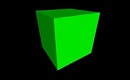

Qb
Arduino, Python

Ever wish that all computers came with a rotation based peripheral? Of course you did! Rotate the cube to see it rotate on the screen.
A collaborative group project, we used a 3-DOF accelerometer / gyroscope / magnetometer to make a rotation based computer peripheral. It was more of a proof of concept, and one of our intial goals was to eventually write an API around it so that others could develop applications for it.
Initially, we were hoping to make it location based as well, but after further research into the topic, dead reckoning had nowhere near the degree of accuracy we'd need for our desired range of motion. While the sensors we had would have been appropriate for tracking the location of a model plane maybe, it couldn't quite be accurate enough for the 2'x2' area we designed it to be used in.
My role on the project became physics and graphics based. I was sent the data from the sensor, given to the computer through USB, and using that, I performed the calculations to move the "cube object" around the screen, and to update our drawing of it. After doing research into the topic of dead reckoning, I decided that we should use quaternions as our representation for rotation. Our end model was done in python, using Vpython for drawing.
The project went well, and in the end, we did have a cube that responded properly to rotation.